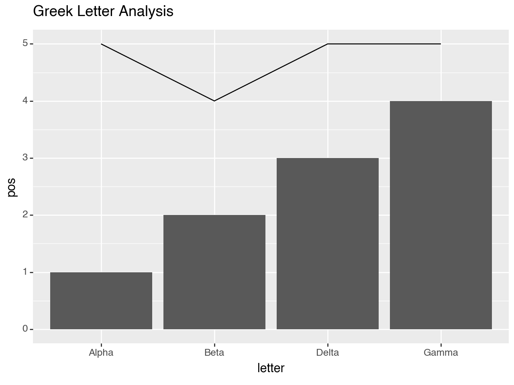
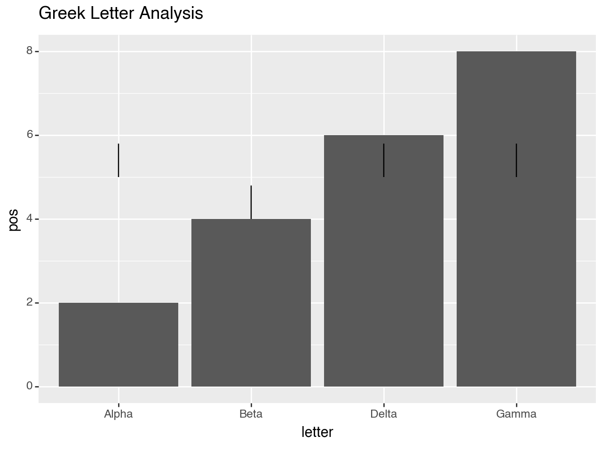
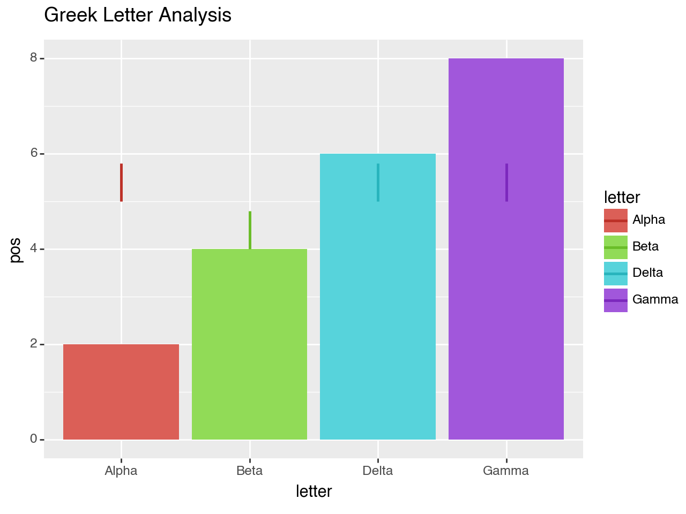

When the automatic groups are not sufficient¶
[1]:
import pandas as pd
from plotnine import (
ggplot,
aes,
geom_col,
geom_line,
labs,
scale_color_hue
)
Some data to plot
[2]:
df = pd.DataFrame({
'letter': ['Alpha', 'Beta', 'Delta', 'Gamma'],
'pos': [1, 2, 3, 4],
'num_of_letters': [5, 4, 5, 5]
})
df
[2]:
| letter | pos | num_of_letters | |
|---|---|---|---|
| 0 | Alpha | 1 | 5 |
| 1 | Beta | 2 | 4 |
| 2 | Delta | 3 | 5 |
| 3 | Gamma | 4 | 5 |
[3]:
(ggplot(df)
+ geom_col(aes(x='letter', y='pos'))
+ geom_line(aes(x='letter', y='num_of_letters'))
+ labs(title='Greek Letter Analysis')
)
/Users/hassan/scm/python/plotnine/plotnine/geoms/geom_path.py:111: PlotnineWarning: geom_path: Each group consist of only one observation. Do you need to adjust the group aesthetic?
[3]:
<Figure Size: (640 x 480)>
We get a plot with a warning and no line(s). This is not what we expected.
The issue is we have 4 groups (Alpha, Beta, ...) and each of those groups has a single point. This is a case where the automatic grouping is not sufficient (or just not what you expect). The solution is to manually set the group for geom_line so that all points belong to one group.
[4]:
(ggplot(df)
+ geom_col(aes(x='letter', y='pos'))
+ geom_line(aes(x='letter', y='num_of_letters'), group=1)
+ labs(title='Greek Letter Analysis')
)

[4]:
<Figure Size: (640 x 480)>
That looks like it.
To understand why the behaviour behind the warning is not wrong, let us try a dataframe with 2 points per group.
[5]:
df2 = pd.DataFrame({
'letter': ['Alpha', 'Beta', 'Delta', 'Gamma'] * 2,
'pos': [1, 2, 3, 4] * 2,
'num_of_letters': [5, 4, 5, 5] * 2
})
df2.loc[4:, 'num_of_letters'] += 0.8
(ggplot(df2)
+ geom_col(aes(x='letter', y='pos'))
+ geom_line(aes(x='letter', y='num_of_letters'))
+ labs(title='Greek Letter Analysis')
)

[5]:
<Figure Size: (640 x 480)>
We get no warning and we get lines.
We can add some color to such a plot.
[6]:
(ggplot(df2)
+ geom_col(aes(x='letter',y='pos', fill='letter'))
+ geom_line(aes(x='letter', y='num_of_letters', color='letter'), size=1)
+ scale_color_hue(l=0.45) # some contrast to make the lines stick out
+ labs(title='Greek Letter Analysis')
)

[6]:
<Figure Size: (640 x 480)>
Credit: github user @datavistics (derek) whose encounter with this issue motivated this example.